Event → Candidates → the Removed group. Today a removed candidate’s ⋯ holds Restore · Delete permanently and only admins have it, so a candidate who paid and was removed (their money still counts in Payments recorded) has no way to print the receipt. After, as Color Belt does (v0.428): a removed candidate with a payment or refund that still stands gets Print receipt first, in its own group; admins see Print receipt · line · Restore · line · Delete permanently; staff see a ⋯ holding only Print receipt (they still get no Restore or Delete). With nothing paid there is no Print receipt (admins: Restore · Delete permanently, as today; staff: no ⋯). Never while Hide private details is on.
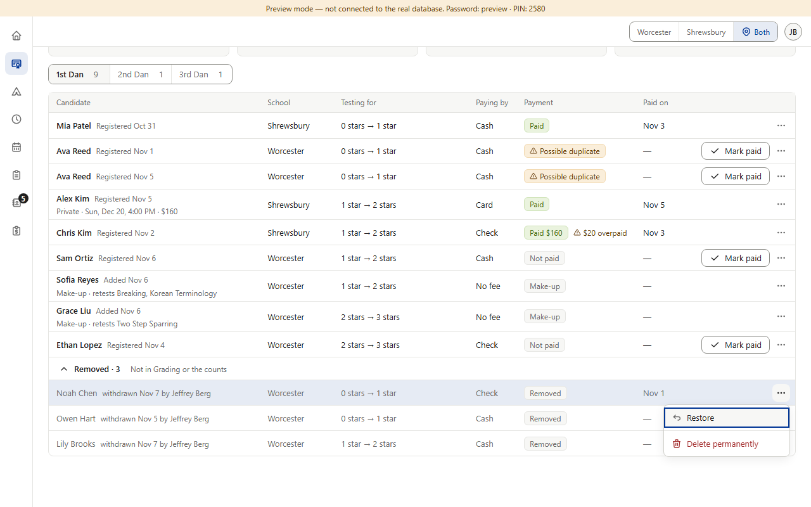
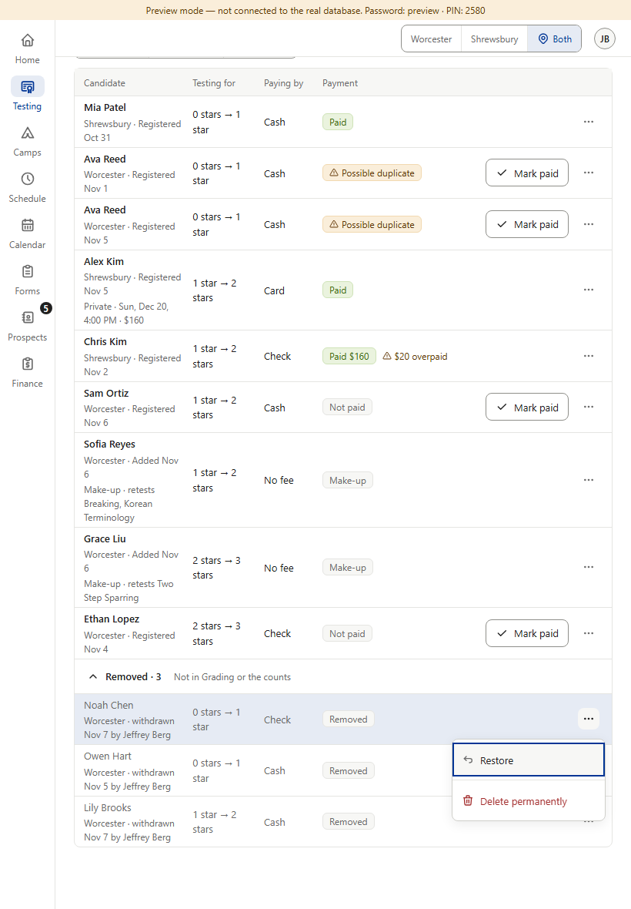
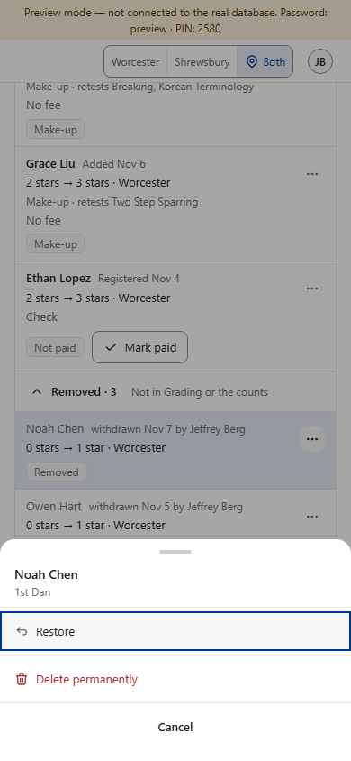
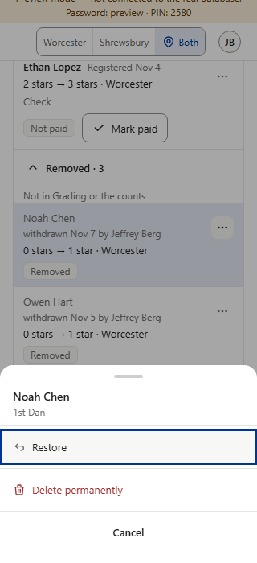
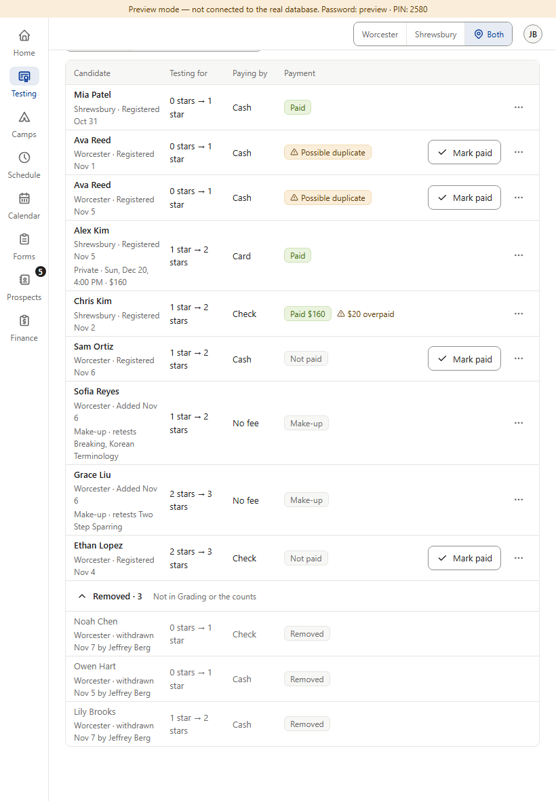
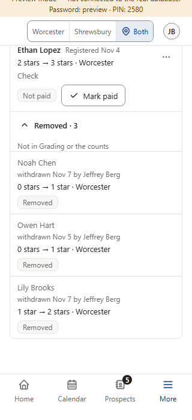
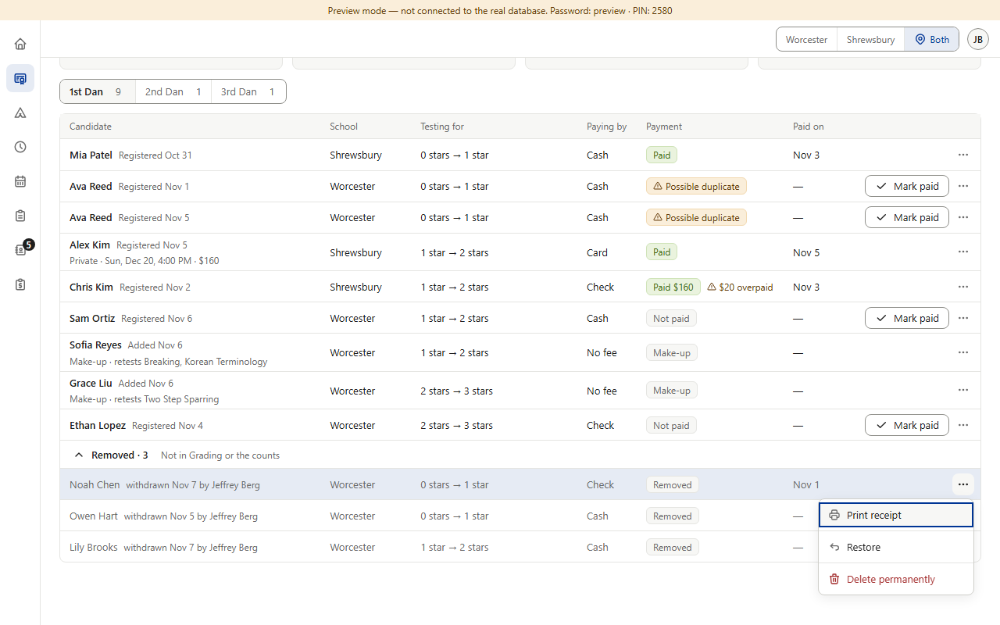
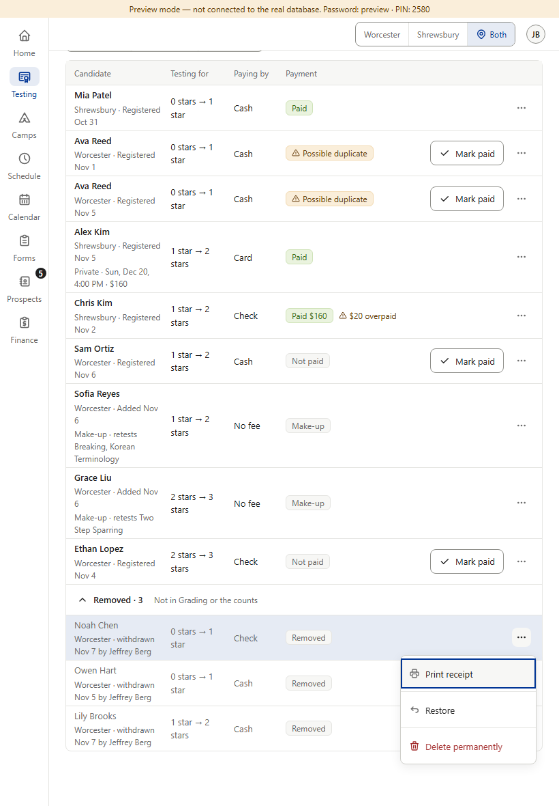
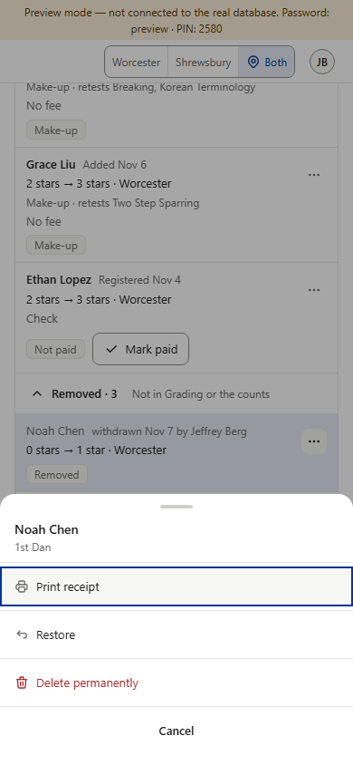
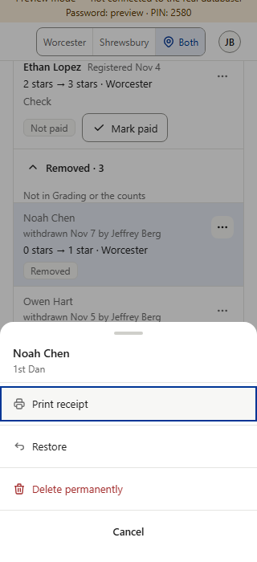
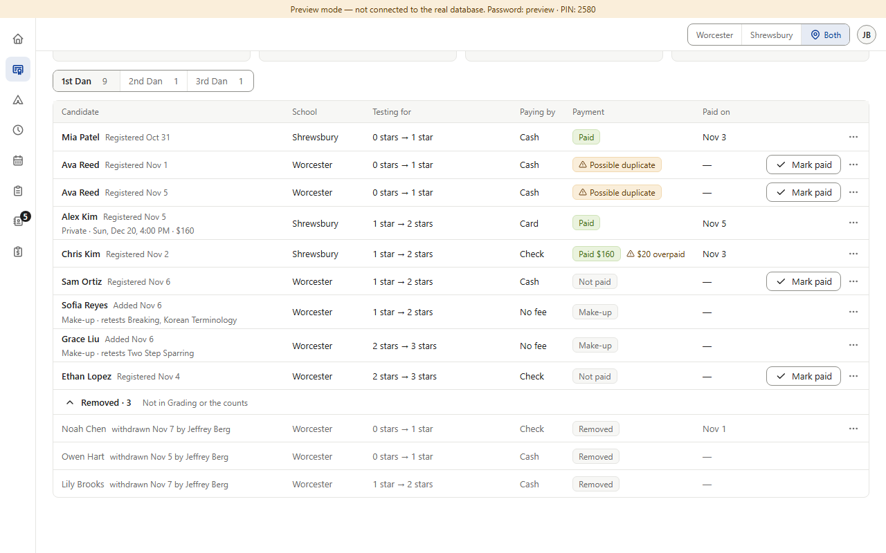
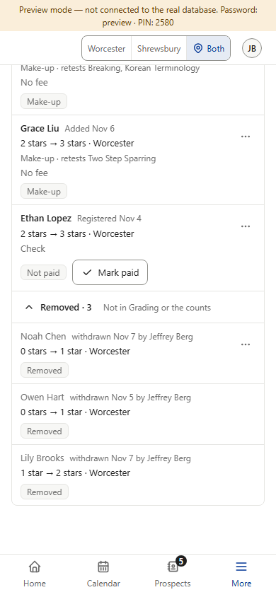
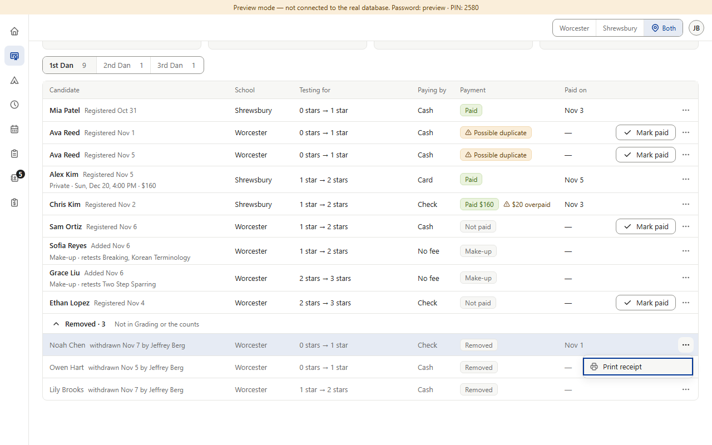
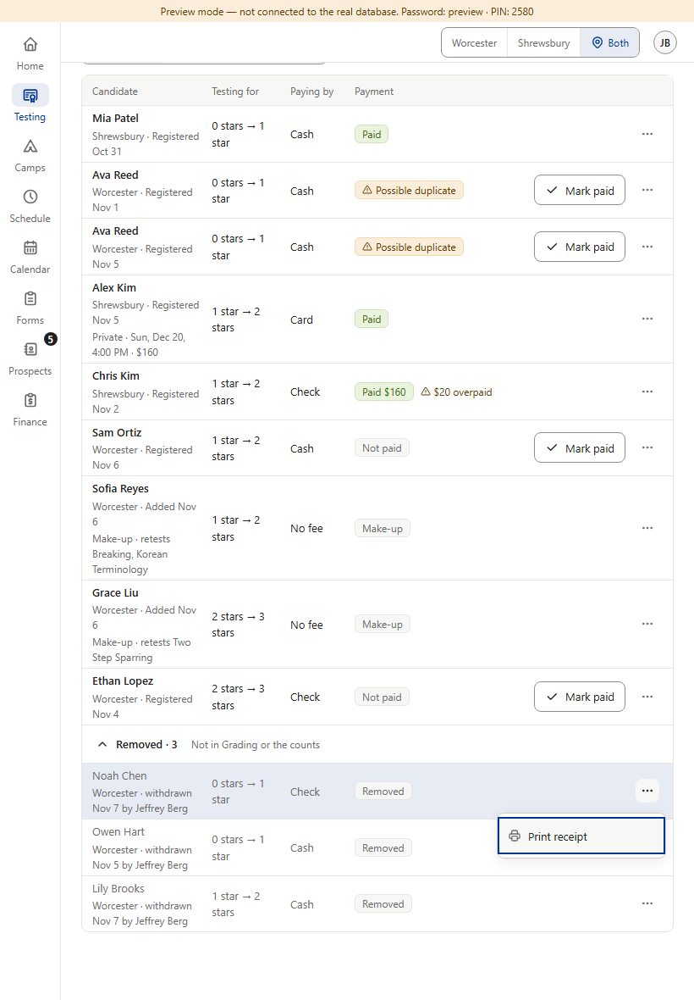
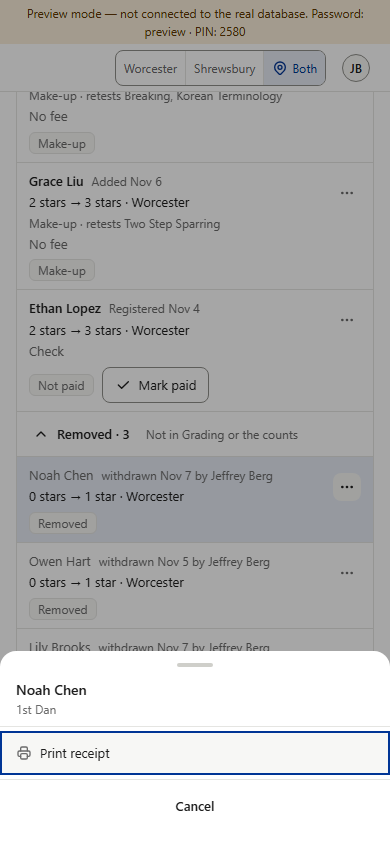
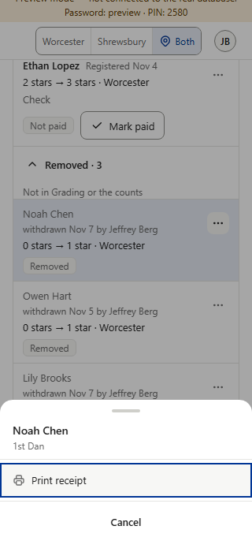
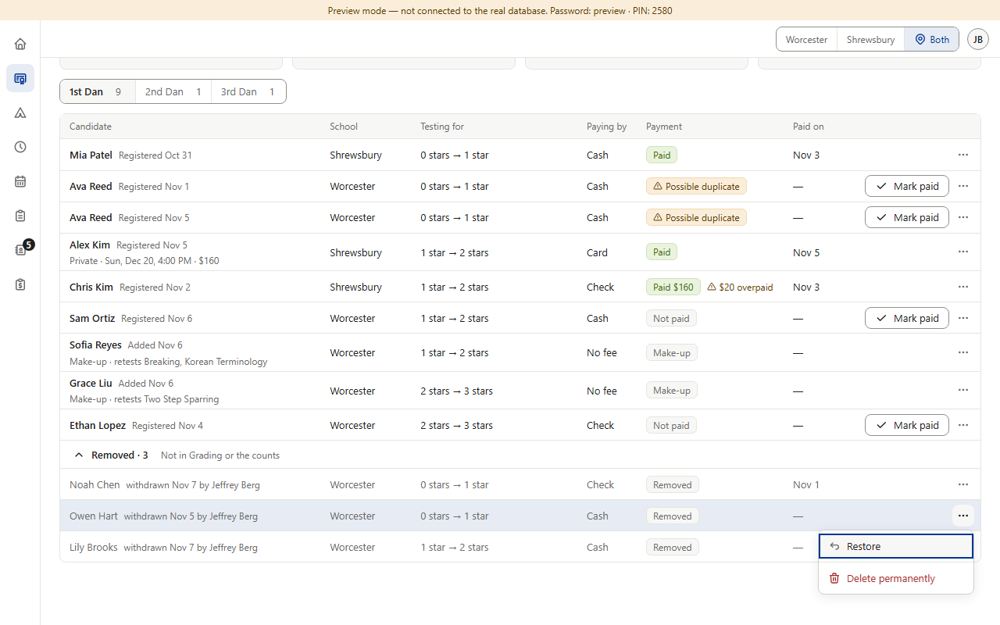